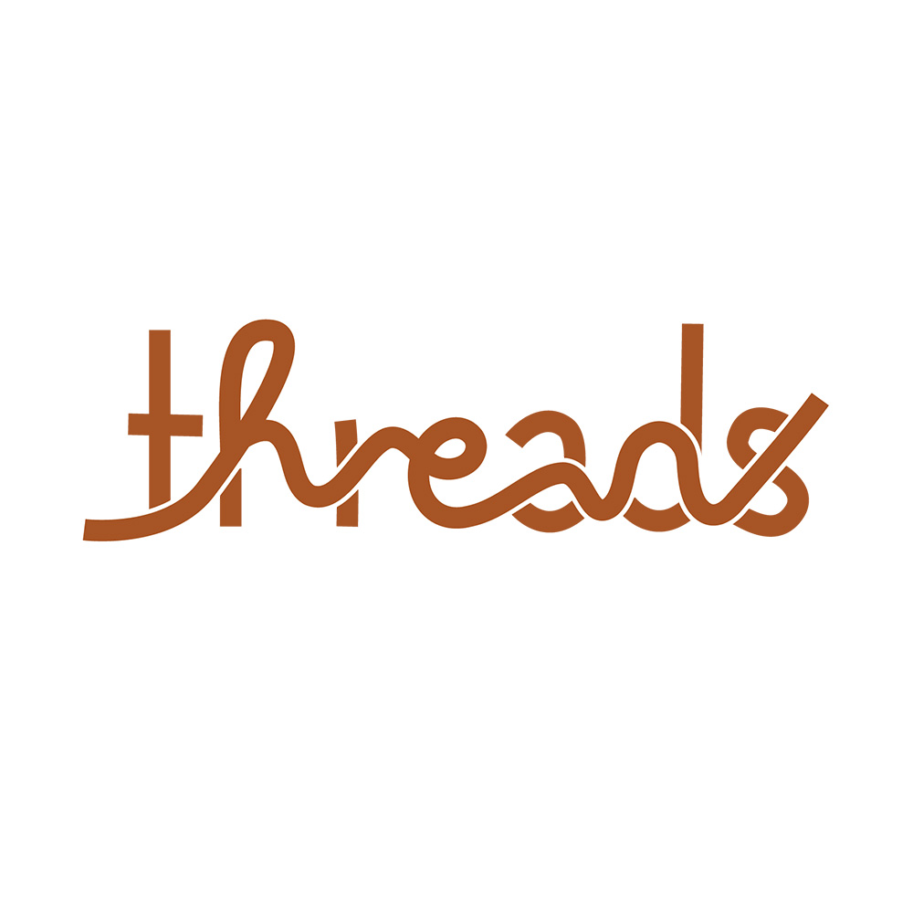
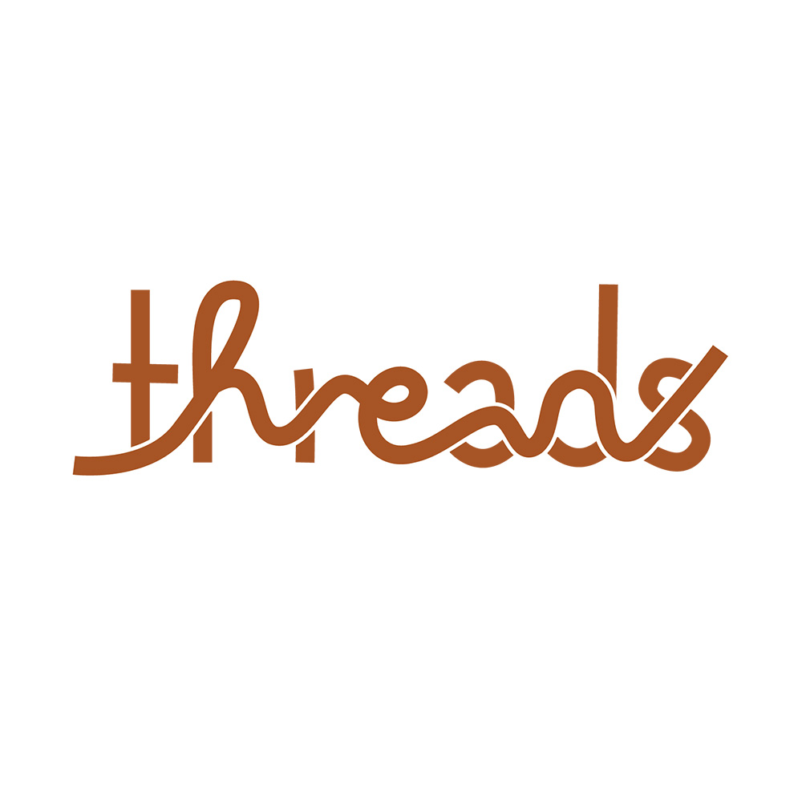

Animated Logotype
Threads
Static and Animated Logotype
Concept
Threads is a modern clothing retail brand targeting young, fashion-conscious shoppers and local trendsetters. Rather than treating the name as purely metaphorical, the concept centers on the physical behavior of thread itself. The identity explores how garments are constructed — how thread loops, pulls, overlaps, and binds material together.
The goal was to create a logotype that feels bold and urban while remaining conceptually grounded in the material reality of clothing construction.
Design Approach
The process began with typographic research and type tasting to determine the structural tone of the brand. After selecting a typeface with modern presence and confidence, the focus shifted from font selection to material study.
By analyzing how thread behaves — its movement, tension, and stitch patterns — the concept evolved into constructing the word "Threads" through a continuous thread line integrated into the letterforms. The structured type provides clarity and legibility, while the organic thread introduces movement and softness.
In the animated version, the thread emerges from a shopping bag, forms the word across the screen, and retracts back into the bag. This motion reinforces the circulation of clothing — garments move in, move out, and remain in constant exchange.
Result
The final identity balances structure and fluidity. The logotype reads clearly at scale, functions effectively in both static and motion formats, and translates seamlessly across storefront signage and digital platforms. By allowing thread to drive both form and animation, the identity remains cohesive and directly connected to the brand's core concept.